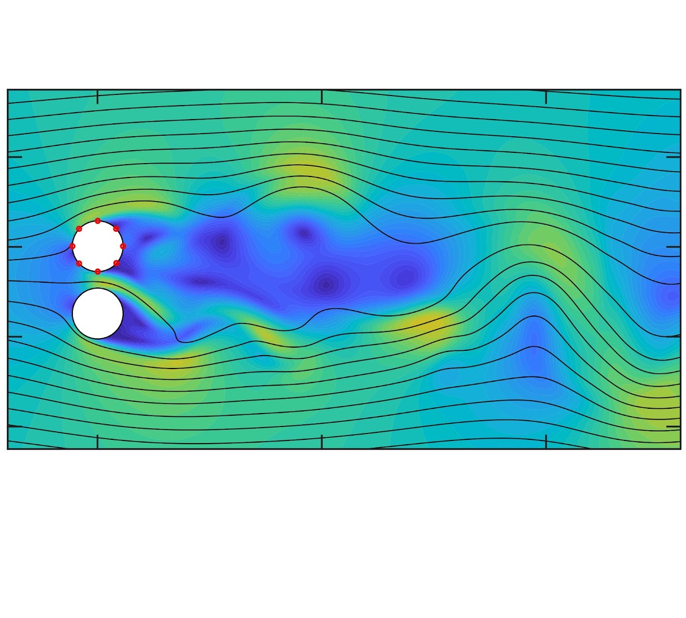

Flow sensing
I study what a structure can sense about its surroundings through the pressure on its surface. When a nearby body changes the flow, it also changes how pressure varies around the structure and over time. I use these pressure patterns to investigate which features of the surrounding flow or nearby geometry can be inferred from measurements on the structure itself.
A central question is how much of that information a small set of sensors can capture. Two configurations may produce similar readings at one location and different readings elsewhere on the surface. I use flow simulations to compare sensor locations and test how reliably an inverse model can distinguish configurations when measurements contain noise or the model encounters conditions outside its training range.
Estimating the gap between cylinders
In one study, I asked whether pressure on one cylinder could reveal the distance to a second cylinder beside it. I varied the gap between two stationary, equal-diameter cylinders in three-dimensional simulations at Re = 200. The figure shows the flow around the pair and the sampling locations on the upper cylinder.
I compared inverse models, evaluated a four-sensor layout, and tested sensitivity to added noise. Gaussian process regression gave the strongest predictions in this benchmark. The models estimated unseen gaps within the sampled range more reliably than gaps requiring extrapolation. Extending this result to moving bodies or other geometries requires further validation.
